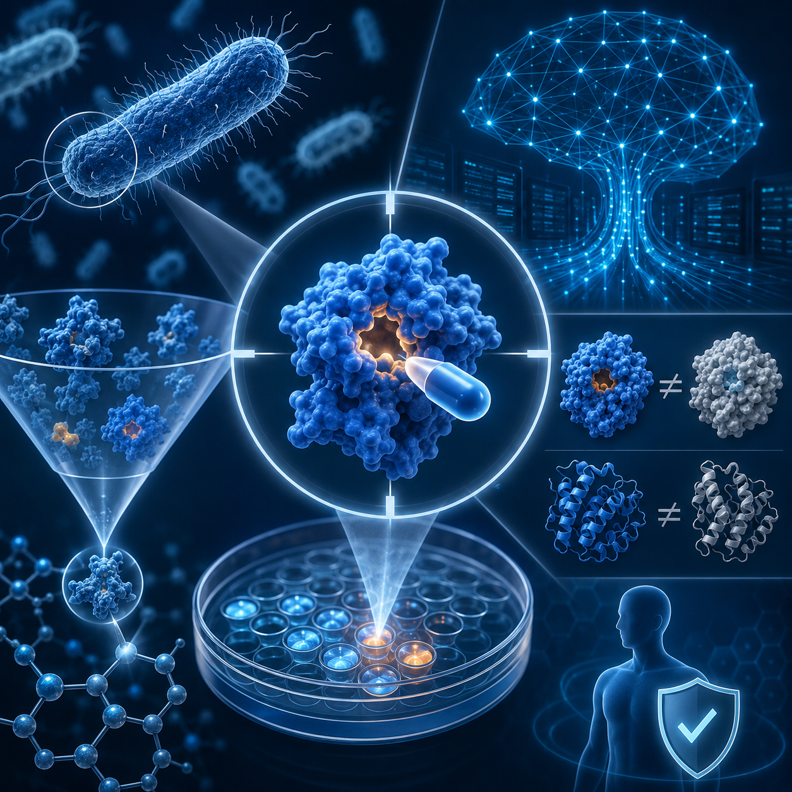
Target discovery
Goal Identify targets essential for bacterial survival with significant structural divergence from human homologs to ensure safety.
AI role Literature intelligence, druggability scoring, and target prioritization.
A collaborative white paper on AI-assisted drug discovery for leptospirosis, driven by human scientists and intelligent systems
Leptospirosis is one of the most widespread and severe zoonotic infectious diseases globally, classified as a neglected threat with major public-health impact. Transmission occurs primarily through contact with contaminated water or soil. High-risk groups include farmers, livestock workers, sewer workers, and flood-response personnel.
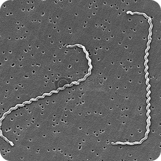
This project defines a clear human–AI collaboration boundary: AI handles large-scale data retrieval, pattern recognition, and high-throughput computation; human scientists own strategic decisions, critical evaluation, and final approval.

Goal Identify targets essential for bacterial survival with significant structural divergence from human homologs to ensure safety.
AI role Literature intelligence, druggability scoring, and target prioritization.
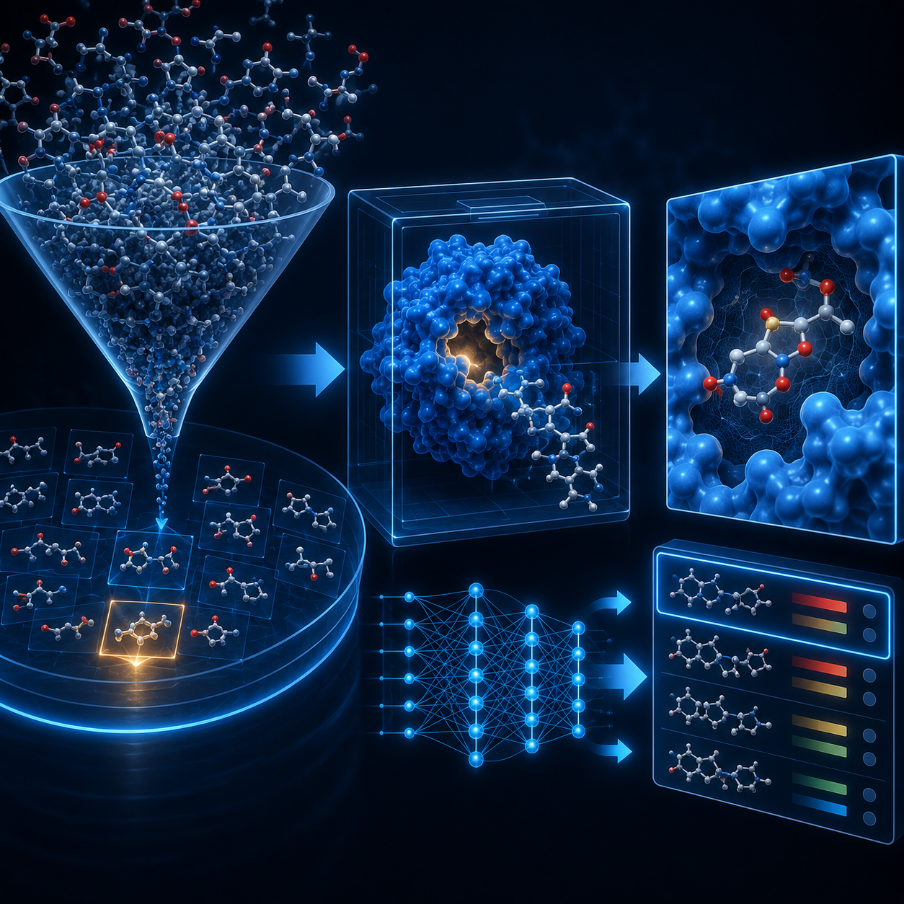
Goal Screen large compound libraries for lead molecules that bind the target with initial activity.
AI role Ultra-large-scale virtual screening and binding-affinity prediction.
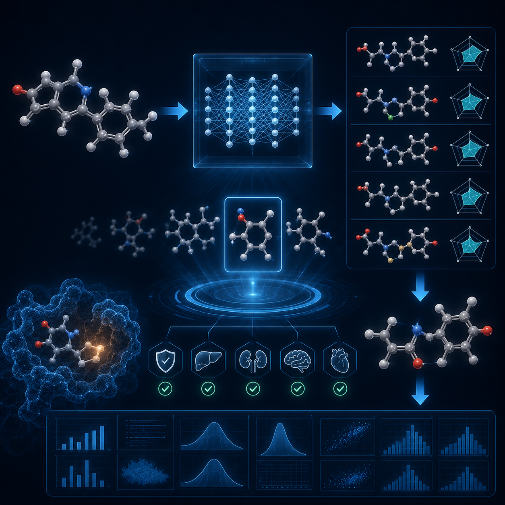
Goal Refine lead scaffolds to improve biological activity and ADMET profiles.
AI role Automated scaffold-modification proposals and ADMET pharmacokinetic/toxicity prediction.
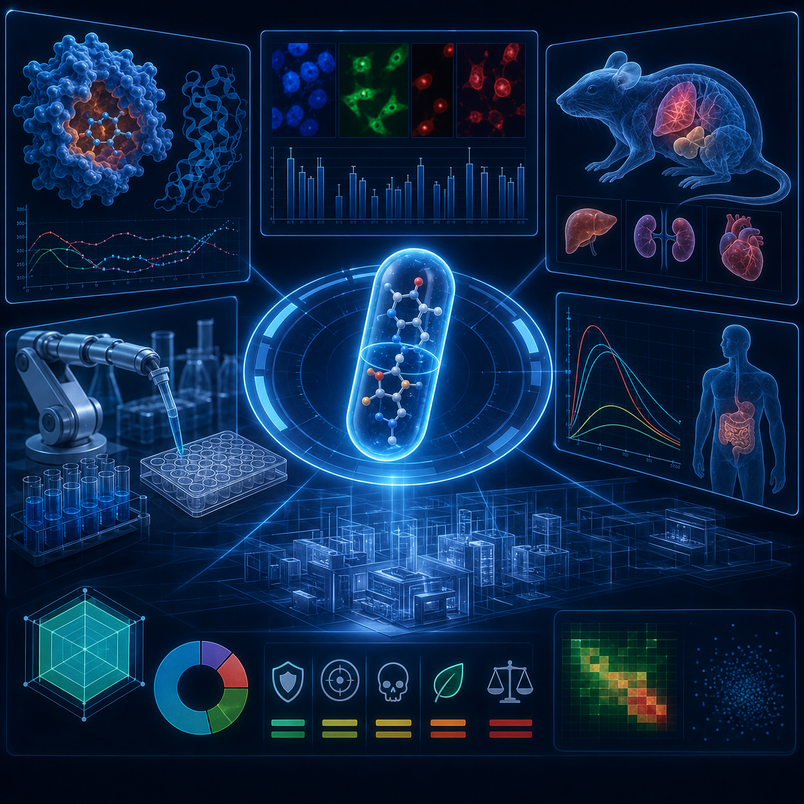
Goal Evaluate developability and toxicity risk to reduce clinical trial failure rates.
AI role Multi-dimensional developability scoring and automated preclinical reporting.
Core digital toolchain: The pipeline integrates JVS Claw (multi-agent assistant), AlphaFold (3D protein structure prediction), CavityPlus (binding-pocket detection), and SwissDock & SwissADME (docking and ADMET prediction).
Using JVS Claw, we mined literature from 2020–2026 and evaluated five candidate proteins, ultimately selecting DNA Gyrase B (UniProt Q8GQD2) as the core target. It shows high essentiality and strong bacterial selectivity with low human-cell toxicity. AlphaFold structural confidence reached 86.62%.
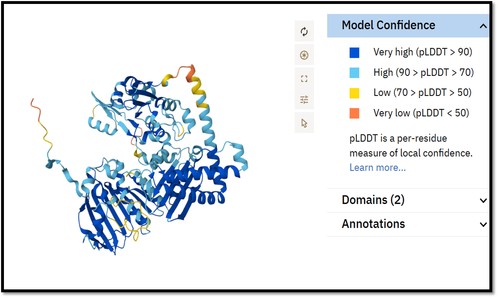
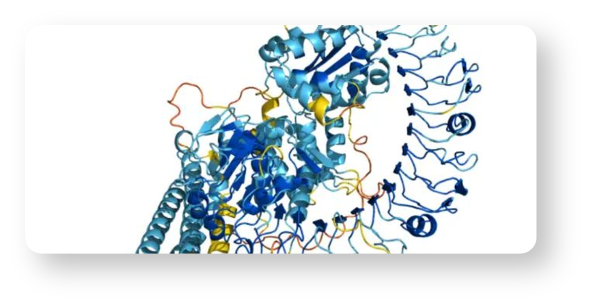
CavityPlus identified a druggable pocket scoring 5719 (scores >5000 indicate high-potential binding sites). Docking yielded a plant-derived hit, myricetin, with an initial binding energy of -6.828 kcal/mol — moderate affinity with clear optimization headroom.
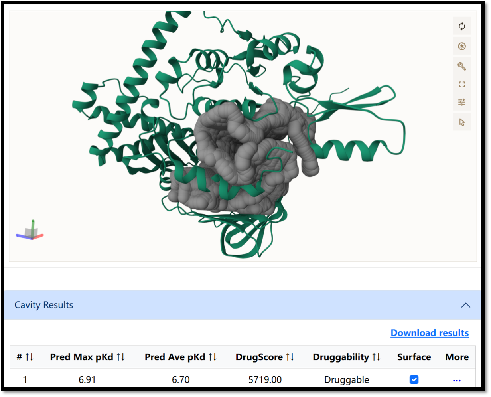
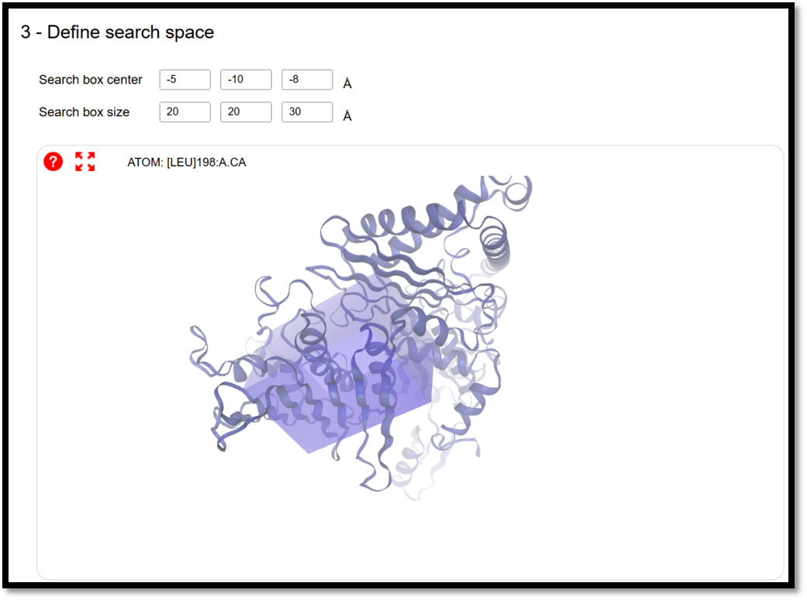
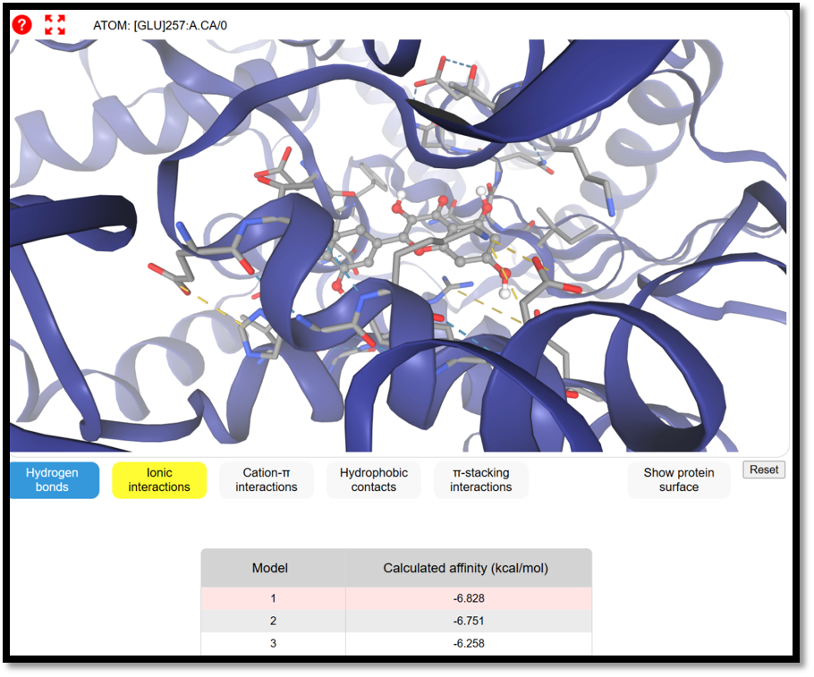
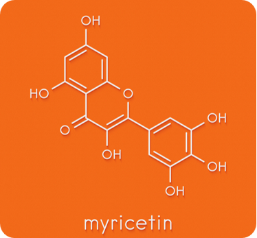
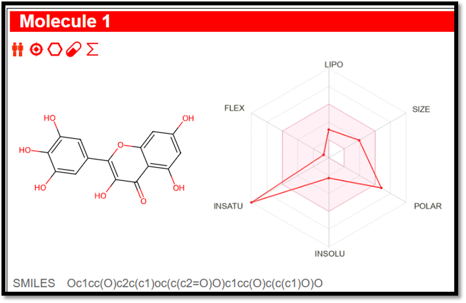
Human scientists supplied precise medicinal-chemistry modification instructions to guide AI-driven refinement:
Among five modification strategies, Option 5 (MYR-Triple) — combining 3'-NH₂, 7-OCH₃, and 3-F — offered the strongest synergy despite higher synthetic complexity. Optimized SMILES: C0c1cc(O)c(O)c(N)c1-c2oc3cc(O)c(O)c(F)c3c2=0.
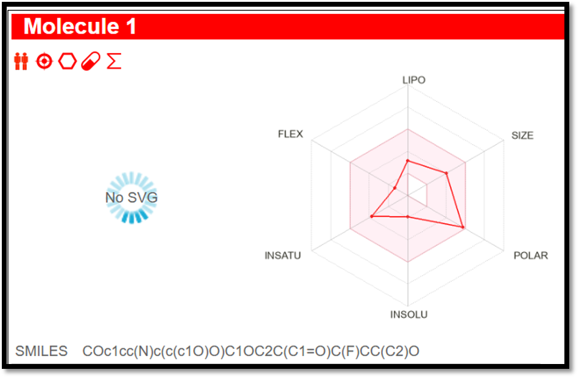
| Property | Myricetin (baseline) | MYR-Triple | Improvement |
|---|---|---|---|
| Binding energy | −7.8 kcal/mol | −10.2 kcal/mol | +31% stronger affinity |
| Interaction sites | 5 key contacts | 8 key contacts | +60% more residue engagement |
| Metabolic half-life (t1/2) | 45 min | 180 min | +300% improved stability |
| Oral bioavailability | 50% | 72% | +44% absorption & solubility |
| Predicted IC50 | 1.85 µM | 0.03 µM | ~60× increase in predicted potency |
| Strategy | Affinity change | Solubility | Bioavailability | Synthetic complexity |
|---|---|---|---|---|
| Strategy 1: 3'-NH₂ introduction | +18% | +400% | +10% | Low (3 steps) |
| Strategy 2: 7-OCH₃ modification | +4% | +50% | +30% | Low (2 steps) |
| Strategy 3: 3-glucoside glycosylation | −5% | +15,000% | +40% | High (4 steps) |
| Strategy 4: 4'-propylamine modification | +22% | +700% | +25% | Very high |
| Strategy 5: MYR-Triple (selected) | +31% | +600% | +44% | Very high (multi-step synergy) |
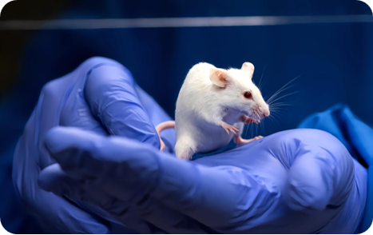
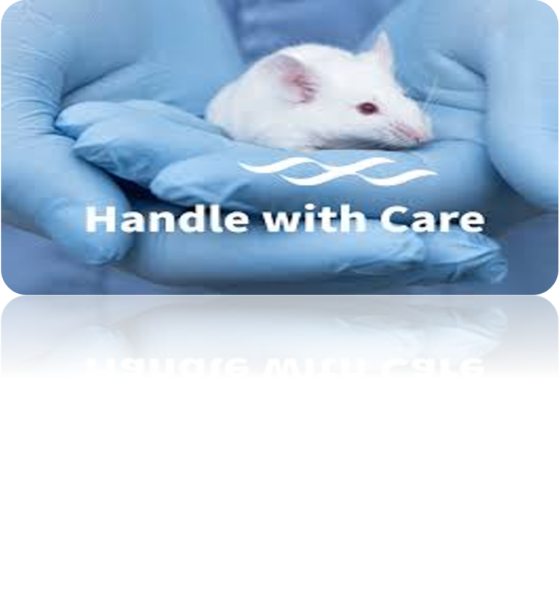
Animal welfare & reduction: High-precision early toxicity prediction filters out weak candidates before preclinical animal studies.
Access for underserved populations: Lower upfront R&D costs may enable affordable, scalable treatments for millions affected by neglected infectious diseases.